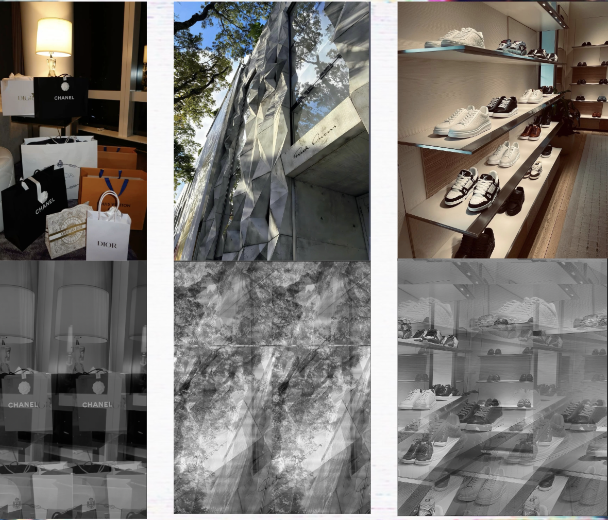
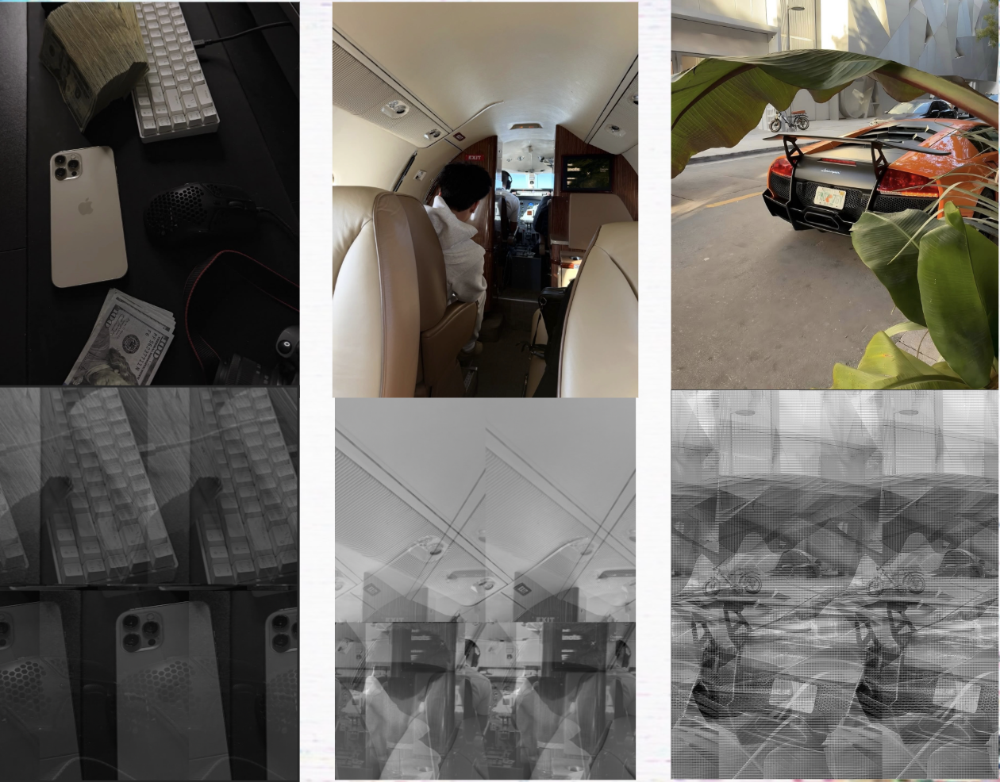
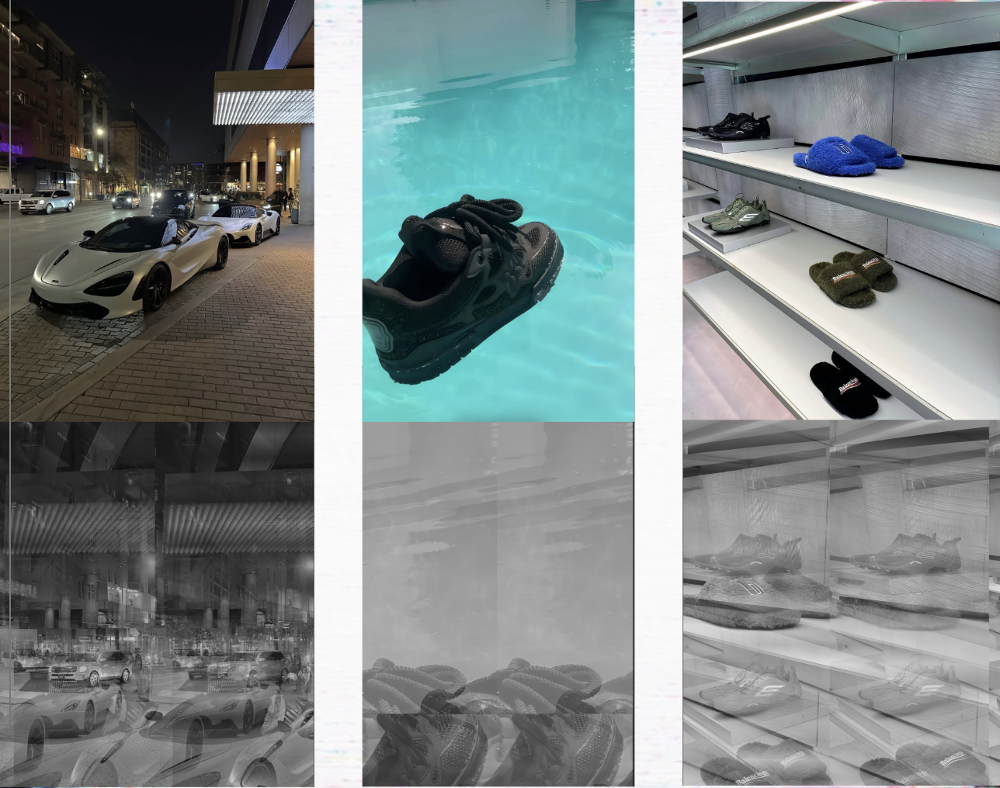

This is my final project for Art 74. This project explores how social media encourages people to create often unrealistic versions of themselves in order to gain approval from others. Using images from apps like Instagram, the work examines the gap between authentic identity and the "fake" identity that people present online.The images are glitched and distorted, symbolizing how social media can blur reality, manipulate memory, and hide authenticity behind something that isn't real. By reposting the altered images back onto social media, the project creates a visual “loop” that critiques the same platforms it uses exhibition space. Literally using the medium to challenge the meaning of the medium itself. The black-and-white aesthetic and fragmented visuals emphasize themes of a fading identity, performative happiness, and the emptiness of materialistic pleasure. This project questions what is truly means to be happy and genuine in such a digital focused society. The goal of this work is to invite the viewer to reflect on their own experiences and how they have played a part in this issue.